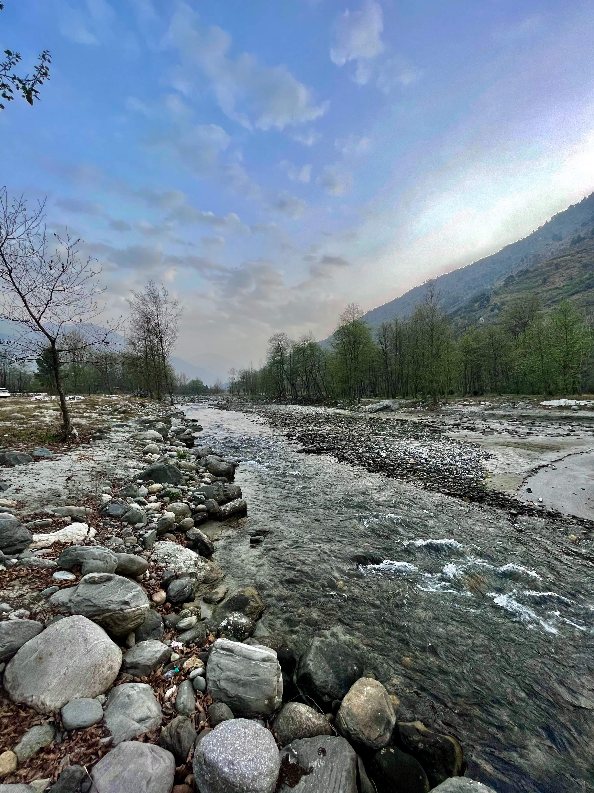

Bandhavgarh National Park is a national park of India, located in the Umaria district of Madhya Pradesh. Bandhavgarh, with an area of 105 square kilometres (41 sq mi), was declared a national park in 1968 and then became Tiger Reserve in 1993. The current core area is spread over 716 square kilometres (276 sq mi). This park has a large biodiversity. The park has a large breeding population of leopards, and various species of deer. Maharaja Martand Singh of Rewa captured the first white tiger in this region in 1951. This white tiger, Mohan, is now stuffed and on display in the palace of the Maharajas of Rewa. Historically villagers and their cattle have been at a threat from the tiger. Rising mining activities around the park are putting the tigers at risk. The Park derived its name from the most prominent hill of the area which is said to have been given by Lord Rama to his brother Laxman to keep a watch on Lanka. (Bandhav = Brother, Garh = Fort).

Bandavgarh National Park is roughly 4.5hrs (~200kms) drive from the nearest major city, Jabalpur. Jabalpur is very well connected to Delhi, Mumbai, Bangalore, Hyderabad, Pune and Indore via air travel. Bandhavgarh does not have the airport facility for mainstream flights, but Jabalpur city, which is the nearest city to Bandhavgarh, has good air connectivity with major cities of India. Private charters can land near Bandhavgarh National Park, Umaria district also has a small air-strip facility for charter planes. Jabalpur Airport (199 km/04:30hrs) is the best option to reach Bandhavgarh National Park as it is connected to: Delhi, Mumbai, Bangalore, Kolkata, Hyderabad, and Bhopal, with these airline options AirIndia, SpiceJet & IndiGo.
The three main zones of the national park are Tala, Magdhi and Khitauli. Tala is the richest zone in terms of biodiversity, mainly tigers. Altogether, these three ranges comprise the 'Core' of the Bandhavgarh Tiger Reserve constituting a total area of 716 km2.With the tiger at the apex of the food chain, it contains at least 37 species of mammals. According to forest officials, there are more than 250 species of birds, about 80 species of butterflies, a number of reptiles. But many people have the species' list of about 350 birds along with photographs. The richness and tranquity of grasslands invites pairs of sarus cranes to breed in the rainy season. One of the biggest attractions of this national park is the tiger (Panthera tigris tigris). Bandhavgarh has a very high density of tigers within its jungles. The 105 km2 of park area open to tourists was reported to have 22 tigers, a density of one tiger for every 4.77 km2.